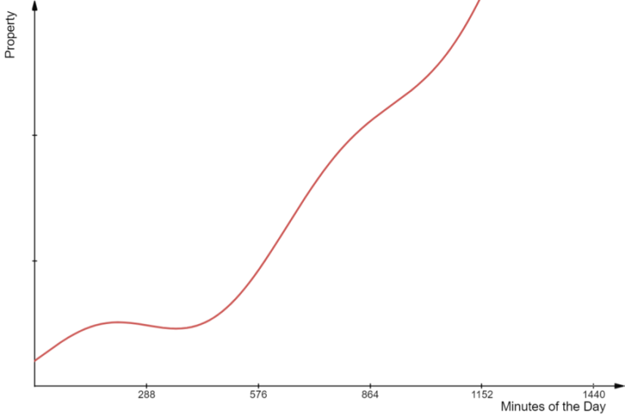
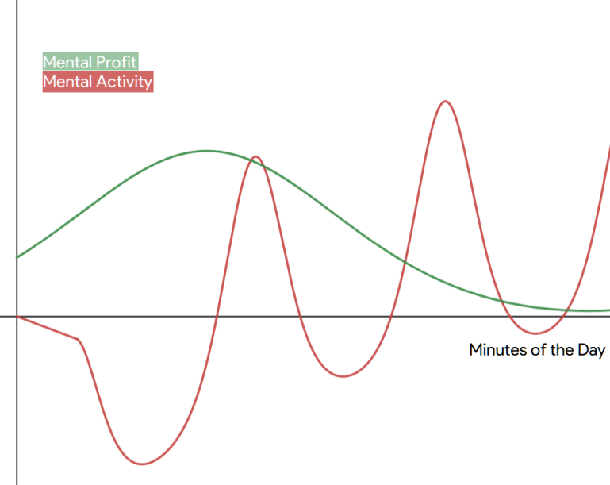
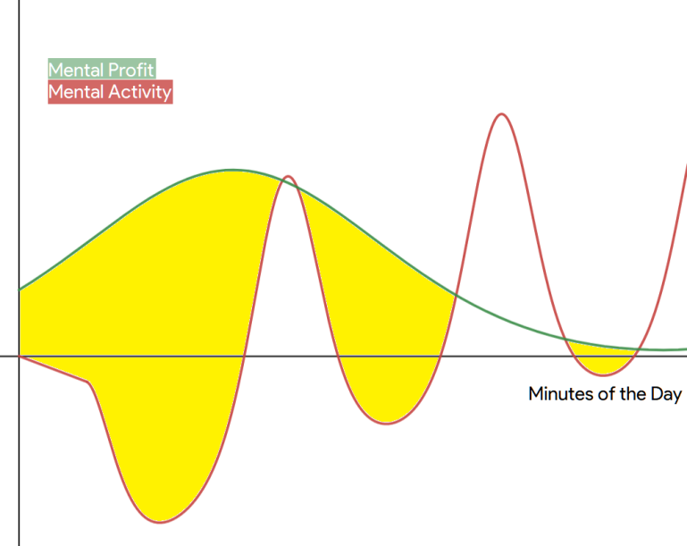
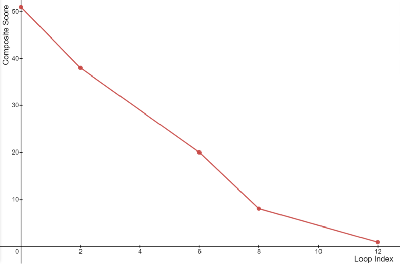

A Novel Approach to Linear Scheduling using a Genetic Algorithm
This project is under development.
Please note that this article is a draft and is open to suggestions and constructive criticism.
Background
Job-scheduling has a wide variety of uses in many industries - the most obvious of which is optimizing resources to extract maximum output in minimum time. Such an application has been developed and implemented using several algorithms and has proven to be extremely effective in managing multiple parallel tasks - or jobs.
However, this model cannot be directly adopted for scheduling day-to-day personal activities, particularly because of the fact that people - almost always - work linearly, i.e., perform one activity at a time. In fact, study has shown that single-tasking is much more productive than multitasking, and can allow people to finish much more work despite taking up tasks in a sequential manner. This not only enhances the quality of work, but also minimizes productivity-related distress for students and professionals, among other people.
Overview
A large fraction of people finds it difficult to create a perfect schedule that works every single day. All the critical parameters that come into play – urgency, value, physical and mental commitment – are too complicated for the human mind to compute accurately, making it difficult for people to recognize their exact productivity patterns.
To provide a mathematically sound solution to this everyday problem, I propose a new approach to linear scheduling that is developed specifically to cater to this need. This approach - called EvSched - is based on optimization through a genetic algorithm that has been elaborated on in this text.
I have also developed a prototype called Kronologue to demonstrate this technique. Kronologue boils down the process of effective scheduling to a few easy steps for the user, whose entire schedule is rearranged and optimized keeping in view their energy and efficiency curves, their priorities, their capacities, and their sensitivity to distractions.
Kronologue has been able to produce schedules with as much as 99% greater productivity.
Onboarding
First-time users are asked to provide a set of baseline data in order to begin using the scheduler based on EvSched. This data includes details about the user’s intended sleep pattern (including daytime naps) and details about their planned tasks for the day. Each task has a set of properties that have been detailed below.
- Time
The user is asked if their tasks have a strict timing, in which case they can simply enter this exact time interval. If the task has flexible timings, the user is asked for a preferred time interval during the day, along with a Time Priority - which measures the extent of rescheduling allowed for the task. The Time Priority of a task with strict timings is set as 100%.
- Task Metrics
The user is asked to provide the following four parameters for each task. These parameters are set on a scale from 0 to 100%. They are variable and their values can change over time based on the responses received from the user.
- Mental Activity - Mental effort required for the task.
- Physical Activity - Physical effort required for the task.
- Urgency - Degree of immediacy associated with the task.
- Value - Importance of the task with respect to the user’s short- or long-term goals.
- Optimization Parameters
These parameters essentially play the role of weights in the core algorithm and are supposed to be determined over time by the program. However, the user is also given the option to enter initial values into these parameters when the task is created for the first time.
- Influence of the previous day's performance on the productivity of each task.
- Cumulative Tiring Effect caused by each task over time.
- Tiring Effect caused each task per unit time (per minute).
- Effect of tiredness on productivity in each task.
- Effect of mental and physical hindrances on productivity in each task.
Sleep
Sleep is also treated like a task in this algorithm. However, it is processed separately and the typical metrics and parameters denote slightly different information in case of sleep. The user is required to enter the duration of their night sleep, and the maximum napping time they need over the day along with the minimum nap duration. The meanings of all the metrics and parameters in context of sleep have been described below.
- Task Metrics
In case of sleep,
- Mental Activity is replaced by Mental Influence which measures how comfortable the sleep is.
- Physical Activity is replaced by Physical Influence which measures how rejuvenating the sleep is.
- There is no Urgency property.
- Optimization Parameters
In case of sleep, the Tiring Effect is treated as the Regenerating Effect by giving it negative values for related parameters.
Rationale for Choice of Metrics and Parameters
I conducted a detailed survey of over 57 people to gather data about
- the current methods that people use for scheduling their daily life.
- the success or failure of these methods.
- factors and trends that affect productivity on short-term and long term bases.
The survey respondents included both children and adults (ages 11 to 46) from different backgrounds, and comprised of 56% females and 44% males.
As much as 55% people have reported that they often find it difficult to manage their schedule; the most important reasons of low productivity are disturbed sleep (22%) and improper prioritization of tasks (86%). It could also be seen that although people are engaged in a lot of activity, they hardly use any productivity technique in their daily life (only 45% people are aware of these techniques). While I initially expected to find a ‘perfect’ time of the day or a ‘perfect’ workplace setting required for higher productivity, the survey revealed that even if this ‘perfect’ exists, it is not the same for every individual. In fact, even for a given individual, it can vary on different days. Thus, it became clear that we must adopt a personalized approach that can take into account daily and hourly variations in productivity, which in turn are based out of a variety of factors.
Sleep turned out to be a very important factor in productivity – and thus it has been comprehensively taken into account by EvSched. Another important feature revealed by the survey was the abrupt transition between mental and physical activity in people with reportedly low productivities. Many people found it difficult to determine their maximum efficiency at mental or physical activity at any given time of the day, ending up exhausting themselves (mentally or physically) before completing all the planned tasks. Moreover, the urgency and the value of particular tasks often overrode existing plans for many people – leading to sudden breaks in productivity. This necessitates a method for examining urgency and value well in time, in order to prevent last-minute hassle and stress.
I studied all the descriptive responses and gathered the factors that could be measured qualitatively and quantitatively. Many factors (like weather and eating habits, among others) examined in the survey ultimately turned out to be relatively less important for the purpose of scheduling, and were thus not taken into account while creating EvSched.
Preparing the Base
This algorithm works on a 2-dimensional matrix where one axis contains 1440 rows to represent each minute of the day, and the other axis contains 11 columns that contain all the information about the task occurring at any particular minute. The conversion of data received from the user (and from the database) to this Tasks Matrix is done before the optimization begins.
In additional to the parameters discussed before, each row contains an additional property called Cumulative Duration. This is a count of the number of minutes spent in the activity up to the concerned minute. Also, before being optimized, the Schedule contains each task at the time preferred by the user. This schedule is later modified during optimization.
Plots
This algorithm can be best visualized through plots created for different aspects of scheduling. A Plot in this context is a 1-dimensional Data-series with 1440 elements denoting a specific property of each of the 1440 minutes of the day. If plotted on a graph, it will appear in the below format. Details about each plot generated by the algorithm have been discussed in the following text.
A metric that can be seen in several of the below plots is the Previous Day metric. This is a measure of the productivity of the user at each minute of the day in the past. This too is stored like a Plot, but is not directly processed like the plots mentioned later.
The previous day metric, (\(\rho_{n}\)) is a weighted mean of the productivities at the nth minute of the day.
\(\rho_n = \frac{1}{D} \sum\limits_{k=0}^{D} e^{-\frac{k}{10}} C_k \frac{H_{m,k} + H_{p,k}}{2}\)
Here, $D$ is the total number of days for which the user has used the application, $C_k$ is the percent completion (0 – 100%) of the task occurring at the nth minute (of the kth day), and $H_{m,k}$ and $H_{p,k}$ are the degrees (0 – 100%) of mental and physical hindrance to the task occurring at the nth minute (of the kth day). $C_k$, $H_{m,k}$ and $H_{p,k}$ are collected for all active minutes (i.e., when a task is being performed), and their values are provided by users when they click Mark as Done for any task on their schedule on a given day. Note that $k$ is counted backwards, i.e., $k=0$ for the current day and $k=D$ for the first day of use of application.
It should be noted that in this function, the factor of $e^{-\frac{k}{10}}$ ensures that recent days have a greater influence on the value of $\rho_n$ since this function is majorly meant to pick-up short-term patterns of users. To avoid over-tracking the user and to reduce complexity, only the composite values of the Previous Day Metric are stored (information regarding the number of days for which the application was used ($D$), and the number of days since last usage($d$) will be available in the user’s profile), rather than intermediate data. Whenever new data is recorded, the old value is updated as shown below.
\(\rho_{\text{new}} = \frac{D \frac{\rho_{\text{old}}}{e^d} + C \frac{H_m + H_p}{2}}{D+1}\)
Mental Plot
The mental plot tracks the mental productivity of the user throughout the day. This mental productivity ($\eta_n$) is calculated for the nth minute of the day through the following function.
\( \eta_n = A_n \rho_n - B_n e^{C_n \tau_n / 1000} - D_n \Gamma_n\)
Here, $A_n$, $B_n$, $C_n$ and $D_n$ are the metrics for previous day, cumulative tiring effect, tiring effect per unit time and effect of tiredness. $\tau_n$ is the cumulative duration of the currently occurring task, till the nth minute, i.e., $\tau_n = n-k$, where k is the minute when the task began. $\Gamma_n$ is the cumulative tiredness, and measures the tiredness from all the tasks that happened before the nth minute. It is a weighted sum of tiredness from previous tasks.
\(\Gamma_n = \sum\limits_{j=0}^{N} \frac{F_j}{n - t_j} \)
Here, $F_j$ is the tiredness caused by the jth task which began at the $t_j$th minute. The divisor of $n-t_j$ is used to diminish the effect of distant tasks, and weight recent tasks strongly. $F_j$ is calculated by the Mental Strain function in the following manner.
$F= C∙B∙M∙T$
Here, T is the total duration of the task and M is the Mental Activity of that task.
$\eta_n$ is calculated in this fashion because of the assumption that productivity is loosely linked to particular times of the day, and that this productivity is degraded exponentially as the any task proceeds, while also being influenced by exertion since the beginning of the day.
The plot is normalized to convert it to the range $[-1,1]$, by the following transformation that is applied to each value in the plot.
\(\eta_\text{norm} = 2\frac{\eta - \eta_\text{min}}{\eta_\text{max} - \eta_\text{min}} - 1\)
Finally, a Combined Mental Plot ($\Phi$) is created by combining the normalized mental productivity with the Mental Activity for each minute.
\(\Phi = \eta_\text{norm} + M\)
The range of values in this plot is thus $[-1,2]$.
Physical Plot
The physical plot is similar to the mental plot, except that it tracks the physical productivity of the user through the day instead of mental productivity. This physical productivity ($\epsilon_n$) is calculated for the nth minute of the day by the following function.
\(\epsilon _n = A_n \rho_n - B_n e^{C_n \tau_n / 1000} - D_n\Gamma_n\)
Here, however, the cumulative tiredness, $\Gamma_n$ is based not on mental, but on physical activity. Thus, the tiredness, $F_j$ in this function is calculated by the Physical Strain function.
\(F= C∙B∙P∙T\)
Here, $P$ is the Physical Activity of the task. Like the Mental Plot, the physical plot is also normalized and used for computing the Combined Physical Plot ($\Psi$).
\(\Psi= \epsilon_\text{norm}+P\)
Profit Plots
The importance of each task in the schedule is assessed from a combination of urgency, value and activity. Tasks with greater urgency and value provide higher ‘profit’, or benefit, on completion (in terms of mental relaxation, or personal or professional growth). At the same time, the ‘profit’ is also directly dependent on the degree of invested mental or physical activity, since grater investment often comes with an expectation for greater outputs. The profit for a particular minute, $\sigma$ is calculated in the following manner.
$\sigma_m = M\frac{U + V}{2}$
$\sigma_p = P\frac{U + V}{2}$
Here, $\sigma_m$ and $sigma_p$ are mental and physical profits respectively, while $U$ and $V$ are the urgency and the value of the task occurring at the particular minute. The range of these plots is $[0,1]$.
Intuition behind plots
EvSched is based on the hypothesis that the key to achieving maximum productivity is to complete the most valuable tasks during time spans of maximum productivity.
Plots offer a very intuitive to visualize this. The mental and the physical plots provide an overview of the net productivity at any given minute of the day, while the profit plots indicate the relative importance of the task scheduled at that minute. This relation can be realised best by placing these plots on the same graph. Consider the example shown below.
In this example, it can be seen that the user is underperforming for a significant part of the day, by doing high-value activities when efficiency is poor. Likewise, high efficiency is being wasted on a lot of low-value tasks. The intention of this algorithm is to minimize this gap and find a schedule where these two plots are as perfectly synced as possible.
Mathematically, this task can be seen as a minimization problem where our task is to minimize the area indicated below.
Notice that we do not penalize excess productivity because it does not necessarily indicate a loss in the quality of work or in the total efficiency for the day.
Scoring
The intuition discussed above forms the basis of the scoring mechanism in this algorithm. The mental score ($\Delta_m$) and the physical score ($\Delta_p$) are calculated in the following manner.
\( \Delta_m = \sum\limits_{n=1}^{1440} \begin{cases} \sigma_{m,n} - \Phi_{n}, & \sigma_{m,n} - \Phi_{n} \geq 0\\ 0, & \sigma_{m,n} - \Phi_{n} < 0 \end{cases} \)
\(\Delta_p = \sum\limits_{n=1}^{1440} \begin{cases} \sigma_{p,n} - \Phi_{n}, & \sigma_{p,n} - \Phi_{n} \geq 0\\ 0, & \sigma_{p,n} - \Phi_{n} < 0 \end{cases} \)
The subscript $n$ indicates that the value of the parameter is considered at the nth minute. The application of these scores is in the optimization function which has been explained in the next section. It should be noted that a better schedule is one with lower mental and physical scores. Since these scores are representative of the the area shown in the previous graph, we are required to minimize them for in order to obtain a better schedule.
The Blockerize Function
Before a given schedule is optimized by the algorithm, the Tasks Matrix for the schedule is broken down into blocks, where each block is a segment of the Tasks Matrix that contains information about a particular task only.

Apart from slicing, the blockerize function
- separates out the blocks for sleep and for activities with a 100% time priority.
- removes empty blocks (without any activity).
The original time durations of all the activities are preserved in this process. Blockerization makes it easy to move around and rearrange activities based on their durations and other parameters.
Random Shuffling and Rearranging
Before anything else, tasks with strict timings are fixed in the schedule (i.e., a new Tasks Matrix), and the durations of gaps (in minutes) between them are recorded for future reference.
For each gap between these fixed tasks, a property called shift-likely ($\omega$) is calculated. This is a measure of the degree to which a shift in the timing of the task is tolerated. For any ith activity, it is calculated in the following manner.
$\omega_i=\mu∙|t_g-t_i |∙\alpha$
Here, $\mu$ is the Time Priority of the task and \alpha is a random real number in the range $(0,1)$. $t_g$ and $t_i$ are the minutes of beginning of the gap (in the new Tasks Matrix) and the beginning of the task (in the original Tasks Matrix) respectively. Their absolute difference thus indicates the magnitude of change that will take place if the task is placed in this gap.
The blocks of all the flexible tasks are arranged in decreasing order of their $\omega$ values. In this order, it is checked if each task can fit into a particular gap (i.e., if the task's duration $A$, is less than or equal to $k$, the length of the gap). The first task, in this order, to fit this condition is placed in the new Tasks Matrix at the location of the gap.
While placing any task in any gap, the task is placed towards the end of the gap (i.e., the end of the task coincides with the end of the gap). The duration of the task may also be extended into the remaining gap, by an amount $\beta$.
$A^\prime=A+\beta$
$\beta$ is a random integer in the range $[0,k-A]$ and thus, the duration of the gap is reduced from $k$ to $k-A-\beta$ ($\geq0$).
This procedure is continued until all the tasks find a place in the new Tasks Matrix.
Managing Sleep
Night’s sleep is divided into two segments: the night part (before midnight) and the morning part (after midnight). Both of these are kept fixed but their duration is randomly extended into the time before and after the sleep (if any gap exists therein) through the following function.
$A_S^\prime=k∙\mu_S∙\alpha$
$A_S^\prime$ is the extra sleep time added before or after sleep. Here, $k$ is the idle time available before or after sleep, $mu_S$ is the time priority of sleep and $\alpha$ is a random real number in the range $(0,1)$. It should be noted that the result of this computation is always smaller than k.
Naps are treated like blocks. After all other task blocks have been arranged, naps are placed in the remaining gaps with durations that are multiples of the minimum nap time, depending on the length of the gap. It is reasonable to state that naps are thus quantized.
Genetics
Once the new Tasks Matrix is been assembled, the matrix is pre-processed (during which cumulative durations of every task are entered) and then evaluated.
After the score functions create necessary plots and provide the Mental and the Physical scores, the sum of these scores, ($\Delta_m + \Delta_p$) is compared to the sum of these scores for the Original Tasks Matrix (which are preserved during the process).
If the new matrix has a better (i.e., lower) score than the original matrix, it is stored as the best schedule and is now used as the original Tasks Matrix for the next iteration. This means that blockerization is now performed on this matrix and the whole process is repeated in the same manner.
If the new score is not better (i.e., it is higher), the new matrix is ignored and the entire process is repeated with the same matrix. One iteration of this process is referred to as a Loop.
Variation
The variation in the schedule is introduced by an element of randomness while rearranging and extending tasks (and sleep). This variation is random, and is comparable to genetic mutations that occur in any population during duplication. These variations ensure that repeated rearrangements of even the same original matrix will generate unique new matrices.
Selection
Variations are natural, but only the fittest variations survive and propagate. The measure of fitness in this case is the composite score of each schedule (i.e., each Tasks Matrix). The schedules with better scores are retained and others are discarded.
Evolution
As this process is repeated over multiple generations (i.e., Loops) the best schedules become the basis for other schedules and thus drive evolution towards more efficient schedules.
Once a desired level of optimization has is achieved, the process can be terminated and the best schedule can be provided back to the user.
Results
For typical schedules, this algorithm has provided highly promising results.
On average, 50 Loops (which execute in approximately 20 seconds on a 3.6 GHz processor) can improve schedules by as much as 99% (i.e., the composite score has been observed to decrease by 99% at the end of 50 Loops in several test cases). Below is a typical example.
While in the above example a sufficiently low score is achieved within just 12 loops, in several instances, this may happen after 35 to 45 loops. As evolution continues, lower scores become increasingly difficult to attain and the schedule becomes practically constant.
Growth over time
Features like the previous day metric are designed to allow the algorithm to learn more and more about the user over time. By remembering their general long-term and short-term patterns, the algorithm can continue to become more relevant, accurate and personalized over time - while respecting and ensuring user privacy.
About Kronologue
Kronologue is a prototype which employs an intuitive interface alongside EvSched to optimize daily schedules for users. Kronologue's backend has been written in Python and includes almost all the features that have been discussed in this text. The application is currently available as a Web App, but can be directly packaged to desktop and mobile operating systems as well.